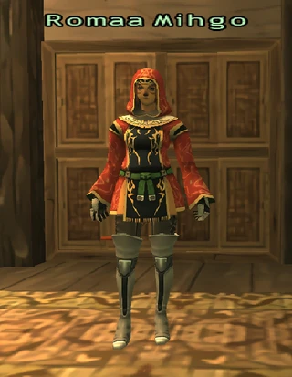

Before you begin
- Complete When One Man Is Not Enough.
Starting point
Zone-entry cutscene · Windurst Waters [S]
People in this mission


Walkthrough
- Enter Windurst Waters [S] for the opening.
- Speak to Mham Lahrih in Sauromugue Champaign [S] (K-9), atop the small fort north of the cavernous maw.
- Examine the Abandoned Mineshaft at the foot of the nearby stairs for a Signal firecracker. Examine it again when the party is ready to enter Ghoyu’s Reverie.
- Clear the initial Quadav around Romaa Mihgo and her Wildcat Volunteers. Destroy the Confederate Belfry while keeping Romaa alive. Attacking the belfry draws additional Quadav; Gigas arrive later.
- After the victory scene, report to Dhea Prandoleh (H-10) in Windurst Waters [S].
Battle and progress notes
- The objective is the belfry; defeating every reinforcement is unnecessary.
- For another attempt, Mham Lahrih supplies a replacement firecracker once per Vana’diel day.
Completion and reward
Ruby; Jewel of the Cobra Unit title.
What this opens
- Windurst route prerequisite for continuing In the Name of the Father.
- The Long March North, after A Nation on the Brink.
Area maps
Open a zone below, then select a map to enlarge it. Match the named floors and grid coordinates in the steps; these are reference area maps, not a live position tracker.
Windurst Waters (S)


Sauromugue Champaign (S)

Ghoyu's Reverie


Zone guides
References
- FFXIclopedia — A Feast for Gnats
- Reviewed mission implementation
- Reviewed mission implementation
- Reviewed mission implementation
- Reviewed mission implementation
- Reviewed mission implementation
Steps are an original summary of the linked walkthrough and reviewed source. Other servers’ bonus rewards are not included. How to read requirements, waits and battlefield notes.